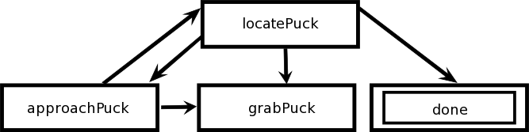

|
|||||||
| [ Home ] | [ Software ] | [ Curriculum ] | [ Hardware ] | [ Community ] | [ News ] | [ Publications ] | [ Search ] |
|
A Recycling RobotConsider a robot whose goal is to recycle cans. This task can be broken up into a number of simpler behaviors: locate a can, approach the can, pick up the can, locate a recycling bin, approach the bin, and deposit the can. Once this sequence of behaviors has been accomplished, the robot begins to search for another can to recycle. To illustrate this style of robot control we can implement a simplified version of the recycling robot described above. We will use a simulated Pioneer robot with a gripper and a blobfinder. The cans will be represented as randomly positioned red pucks in a circular environment without obstacles. Once the robot has picked up a puck, it will store it immediately, and move on to finding more pucks. Below is a graph of the states the robot will go through. It begins in the state locatePuck. While in the state locatePuck it rotates, looking for a red blob. As soon as one is found it goes into state approachPuck to move toward the closest visible puck. If for some reason the robot loses sight of the puck, it will go back to the state locatePuck. Once the robot is positioned with its gripper around the puck, it goes to the state grabPuck to pick it up and store it. Then it will return to the state locatePuck to search again. The state locatePuck keeps track of how long it searches on each activation of the state. If the robot has done a complete rotation and not seen any pucks, it goes to the state done and stops moving.  The following program creates a FSMBrain called GatherPucksBrain to implement the algorithm described above. On setup, this brain starts the gripper and blobfinder devices. Also, when this brain is destroyed it will remove these devices. Next the four states are defined: locatePuck, approachPuck, grabPuck, and done. Finally at the bottom of the program, the brain is instantiated and each state is added to the brain. Notice that when the state locatePuck is added, it has an argument of 1. This indicates that it should be the starting state of the brain. To test out this brain, start up Pyro; then for the server select StageSimulator and the world FindPucks.world, for the robot select Player6665, and for the brain download the program below.
from pyrobot.brain.behaviors import *
from time import *
class GatherPucksBrain(FSMBrain):
def setup(self):
if not self.robot.hasA("camera"):
self.startDevice('camera') # or BlobCamera, or PlayerCamera
if not self.robot.hasA("gripper"):
self.startDevice('gripper')
self.camera = self.robot.camera[0]
self.camera.clearFilters()
self.camera.addFilter("match",255,0,0,) # red
self.camera.addFilter("blobify",0,255,255,0,1,1,1,) # red
class locatePuck(State):
"""
Rotate until a red blob is seen or a complete scan has been done.
"""
def onActivate(self):
self.searches = 0 # counter for number of rotations
def step(self):
redBlobs = self.robot.camera[0].filterResults[1]
if len(redBlobs) != 0:
self.move(0, 0)
print "found a puck!"
self.goto('approachPuck')
elif self.searches > 275:
print "found all pucks"
self.goto('done')
else:
print "searching for a puck"
self.searches += 1 # update counter
self.move(0, 0.2)
class approachPuck(State):
"""
Move towards closest red blob by centering it in blobfinder.
Once centered, then consider distance to the closest red blob.
Once close, move slowly until it is within gripper.
"""
def step(self):
redBlobs = self.robot.camera[0].filterResults[1]
if len(redBlobs) == 0:
print "no puck in sight"
self.goto('locatePuck')
elif redBlobs[0][2] < 50: # sizes need to be changed for pyrobot
print "puck far left"
self.move(0, 0.2)
elif redBlobs[0][2] < 75:
print "puck to left"
self.move(0.2, 0.1)
elif redBlobs[0][2] > 100:
print "puck far right"
self.move(0, -0.2)
elif redBlobs[0][2] > 85:
print "puck to right"
self.move(0.2, -0.1)
else:
if self.robot.gripper[0].getBreakBeam('inner') > 1:
print "grabbing puck"
self.move(0, 0)
self.goto('grabPuck')
elif redBlobs[0][4] > 500: #area
print "puck straight ahead"
self.move(0.3, 0)
else:
print "puck very close"
self.move(0.1, 0)
class grabPuck(State):
"""
Pick up the current puck and then return to locating another puck.
"""
def step(self):
self.robot.gripper[0].store()
sleep(2.0)
self.robot.gripper[0].open()
sleep(1.0)
self.goto('locatePuck')
class done(State):
"""
No more visible pucks, so stop moving.
"""
def update(self):
self.move(0, 0)
def INIT(engine):
brain = GatherPucksBrain(engine=engine)
brain.add(locatePuck(1))
brain.add(approachPuck())
brain.add(grabPuck())
brain.add(done())
return brain
[
Up: PyroModuleSequencingControl |
| [ Home ] | [ Software ] | [ Curriculum ] | [ Hardware ] | [ Community ] | [ News ] | [ Publications ] | [ Search ] |
 View Wiki Source | Edit Wiki Source | Mail Webmaster
View Wiki Source | Edit Wiki Source | Mail Webmaster | |||||||